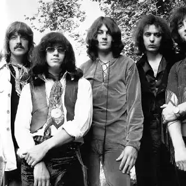
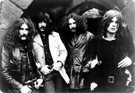

Como o metal surgiu?
A diferença entre rock e metal

bandas pioneiras do metal

Apresentava um som mais pesado e complexo, com músicas como "Smoke on the Water", e influenciou o desenvolvimento do heavy metal.
Saiba mais
Deep Purple

Lançou o primeiro álbum de estúdio em 1970, com músicas como "Paranoid", e é considerado um dos pontos de partida do gênero.
Saiba mais
Black Sabbath
Led Zeppelin
Heavy metal
Características
- Guitarras distorcidas, ritmos fortes, baixo e bateria densos, vocais vigorosos
- Origem: Final dos anos 1960 e início dos anos 1970, principalmente no Reino Unido e nos Estados Unidos
- O termo "heavy metal" apareceu na letra da música "Born to be Wild", de Steppenwolf, em 1968.
- Ronnie James Dio e Ozzy Osbourne são considerados grandes nomes do heavy metal, e alguns os consideram "reis" do gênero.
- Bandas famosas: Metallica, Iron Maiden, Judas Priest, Black Sabbath, Mötley Crüe, Poison, Aerosmith


Trash metal
Características
- Riffs rápidos, batidas percussivas, guitarras distorcidas, vocais roucos
- Bandas famosas: Metallica, Megadeth, Slayer, Sodom, Kreator, Anthrax, Exodus, Sepultura
- Vocais: Asperos e agressivos, variando de gritado e latido a estilos mais profundos e controlados
- Origem: Surgiu na Europa e América do Norte, no final dos anos 1970

Nu metal
Características
- Origem: Nasceu nos Estados Unidos no início dos anos 90
- Bandas: Korn, Deftones, Limp Bizkit, System of a Down
- Letras intensas, guitarras desafinadas, batidas amplificadas
- Influências: Heavy metal, hip-hop, funk, industrial, grunge, synth-pop, hardcore punk, jazz, rap metal, groove metal


Death metal
Características
- Bandas: Death, Possessed, Obituary, Autopsy, Morbid Angel
- Origem: nasceu em Gotemburgo, Suécia, no início da década de 1990.
- Os vocais do death metal são chamados de death growls, que são rugidos/rosnados grosseiros

DSBM
Características
- Vocais rasgados, alternando entre gritos e choro
- Ligado à misantropia
- Origem: Final da década de 1990 na Escandinávia e Europa
- Banda: Psychonaut 4, smother dsbm, Happy Days, Lifelover

Gothic metal
Características
- Origem: surgiu no início da década de 1990 na Europa, originalmente como uma excrescência do death/doom, a fusão do death metal com doom metal.
- As características gerais do estilo são descritas como lento, romântico, dramático, melancólico ou medieval,
- As características dos vocais é a personalidade feminina
- Bandas: Type O Negative, Paradise Lost, Tristania, Sirenia


Metal alternativo
Características
- As bandas de metal alternativo tendem a buscar novas sonoridades, utilizando efeitos, instrumentação e estruturas musicais incomuns.
- o metal alternativo é um gênero dinâmico e multifacetado que busca romper com as convenções do heavy metal, incorporando a diversidade sonora
- Bandas: Faith No More, Sevendust, Helmet, Breaking Benjamin
- Origem: o metal alternativo surgiu no final da década de 1980 e início da década de 1990, nos Estados Unidos,